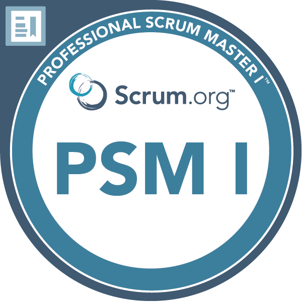

<section class="bg-primary" id="certifications">
    <div class="container" style="justify-content: center">
        <div class="call-to-action">
            <h2>Certifications.</h2>
            <p>
                Genuine learning in coding comes from hands-on experience on real projects. However, for me certifications play
                a vital role in truly mastering the use of essential tools and frameworks. It's a combination of
                real-world practice and focused learning that propels skills to new heights.
            </p>
        </div>
        <div>
            <div class="row custom-justify-center">
                <div class="col-xs-6 col-md-2" style="margin: 10px">
                </div>
                <div class="col-xs-6 col-md-2" style="margin: 10px"></div>
                <div class="col-xs-6 col-md-2" style="margin: 10px">
                </div>
                <div class="col-xs-6 col-md-2" style="margin: 10px"></div>
            </div>
            <div class="row custom-justify-center">
                <div class="col-xs-6 col-md-2" style="margin: 50px"></div>
                <div class="col-xs-6 col-md-2" style="margin: 50px">
                </div>
                <div class="col-xs-6 col-md-2" style="margin: 50px"></div>
            </div>
        </div>
    </div>
</section>
